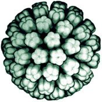
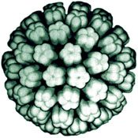

Hello,
My name is Stephan and I used to be (from 1997-1999) a
Fogarty visiting fellow at the NIH in
Bethesda MD, U.S.A. I
worked in the Laboratory of Molecular Medicine an Neuroscience (LMMN) in the
National Institude of Neurological Disorders and Stroke (NINDS) . My special scientific
interests during that time focused on virology and neuroscience. My
major project at that time was arranged around the regulation of the
human
polyomavirus JC Virus (JCV) .
. My special scientific
interests during that time focused on virology and neuroscience. My
major project at that time was arranged around the regulation of the
human
polyomavirus JC Virus (JCV) .
At this time I am working the norwegian National Hospital
(Rikshospitalet) in the
Microbiology section.
During the time
in the U.S.A. I set up my first web pages and many of this pages are
direct offsprings of the original pages. Due to that some parts my be
odd or simply old.
My first language is German, so you may also find some pages written
in German or even parts in Norwegian (as this will become my third
major language).
In my sparetime I exchange the lab bench with the kitchen range or surf through the
internet looking for interesting software, mostly shareware and
freeware. I'm especially searching for science related software which
makes the work in the lab a little bit easier. This for example
includes sequence analysing software, picture analysis software and
data presentation software. I show some links to scientific software
which is (or used to be) sometimes hard to find on the net on my Tips
pages.
In addition I want to give you a list of software which is not
specifically science related but useful for every interested user.
Due to my general interest in computers I developed a good contact
with the people at the NINDS computer facility (RSB) who taught me a lot in how to set
up and optimize a PC running WinDOZ 95. Therefor I want to thank all
of them, especially Brad J. Zoltick.
Page last modified von 21.Juli 2001
{kind=link}